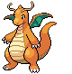

-
Bulbasaur #001

- Grama
- Veneno
Há uma semente de planta em suas costas desde o dia que este Pokémon nesce. A semente cresce lentamente.
-
Ivysaur #002

- Grama
- Veneno
Quando o bulbo em suas costas cresce, parece perder a capacidade de ficar em pé em suas patas traseiras.
-
Venusaur #003

- Grama
- Veneno
Sua planta floresce quando está absorvendo energia solar. Ele permanece em movimento para buscar a luz do sol.
-
Charmander #004

- Fogo
Tem preferência por coisas quentes. Quando chove, diz-se que o vapor sai da ponta de sua cauda.
-
Charmeleon #005

- Fogo
Tem uma natureza bárbara. Em batalha, ele chicoteia com a sua cauda de fogo e corta com garras afiadas.
-
Charizard #006

- Fogo
- Voador
Ele cospe fogo que é quente o suficiente para derreter pedras. Pode causar incêndios florestais ao soprar as chamas.
-
Squirtle #007

- Água
Quando retrai seu longo pescoço em sua concha, esguicha água com força vigorosa.
-
Wartortle #008

- Água
É reconhecido como um símbolo de longevidade. Se sua casca tiver algas, esse Wartortle é muito velho.
-
Blastoise #009

- Água
Esmaga seu inimigo sob seu corpo pesado para causar desmaio. Em um piscar de olhos, ele se retirará para dentro de sua casca.
-
Pikachu #010

- Elétrico
Quando está com raiva, ele imediatamente descarrega a energia armazenada nas bolsas de suas bochechas.
-
Dragonite #011
- Dragão
- Voador
Dizem que em algum lugar do oceano existe uma ilha onde eles se reúnem. Só eles moram lá.
-
Snorlax #012

- Normal
Não fica satisfeito a menos que coma mais de 400 kg de comida todos os dias. Quando termina de comer, vai imediatamente dormir.
-
Butterfree #013

- Inseto
- Voador
Em batalha, ele bate as asas em grande velocidade para liberar poeira altamente tóxica no ar.
-
Lucario #014

- Lutador
- Aço
Diz-se que nenhum inimigo pode permanecer invisível para Lucario, uma vez que pode detectar auras, mesmo aquelas de inimigos que não poderia ver de outra forma.
-
Mewtwo #015

- Psíquico
Seu DNA é quase o mesmo de Mew. No entanto, seu tamanho e disposição são muito diferentes.